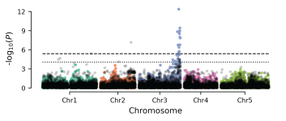

Quantitative genetics
The genetic basis of complex trait variation.
I investigate the genetic architecture of complex traits in natural and experimental populations. By combining GWAS, QTL mapping, bulk-segregant analysis, and k-mer-based-GWAS, I aim to resolve complex genetic variation that can be missed by standard SNP-based approaches.
Example 1
Allelic heterogeneity
GWAS for leaf boron (B) variation in a natural population identified a coding variant in BOR2, a borate efflux transporter gene, but the association only marginally exceeded the conservative Bonferroni-corrected genome-wide significance threshold.
By conducting QTL mapping in an intercross population, I identified a tandem duplication encompassing BOR1, the major borate efflux transporter gene. Extending the analysis to the natural population revealed multiple tandem-duplication haplotypes encompassing BOR1, with BOR1 copy number varying from one to two copies. Accounting for copy number variation at BOR1 substantially improved our ability to detect the association at BOR2. This example illustrates how allelic heterogeneity and complex structural variation can obscure true genetic associations.


Example 2
Complex structural variants
In this example, a 2.7 kb deletion between VIM2 and VIM4, two genes involved in the maintenance of CG methylation, segregates in the natural population and is associated with reduced gene body methylation. While SNP-based GWAS for variation in gene body methylation detected a signal at the VIM2/VIM4 region, the most strongly associated SNP was located 29.8 kb downstream of VIM2/VIM4.
Using k-mer-based GWAS, I was able to directly detect the 2.7 kb deletion, with k-mers spanning the deletion showing the strongest association with gene body methylation variation. This example illustrates how k-mer-based GWAS can improve the identification of causal structural variants that are not directly captured by SNP-based approaches.